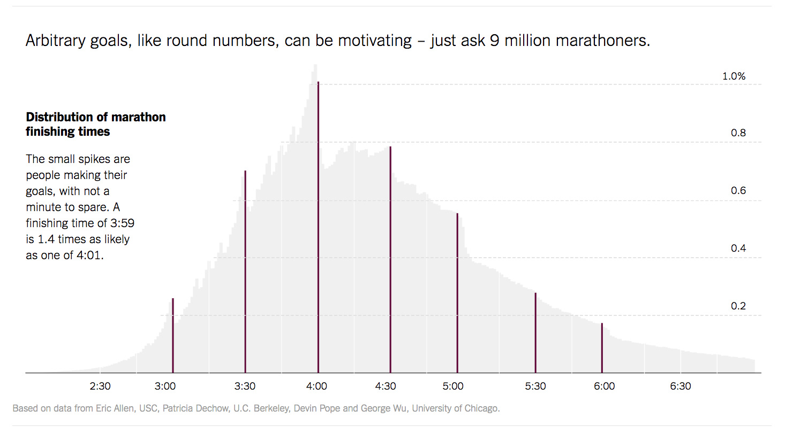

What's so hard about histograms?
Histograms are a way to summarize a numeric variable. They use counts to aggregate similar values together and show you the overall distribution. However, they can be sensitive to parameter choices! We're going to take you step by step through the considerations with lots of data visualizations. If there's anything you do not understand after reading the essay, you can contact us; our contact information is at the very end. Comments and suggestions are welcomed!
Visualizing data
When thinking about data, it is often useful to produce visualizations to better understand distributions and relationships between variables. Since visualizations rely on humans to make and interpret them, they can be fraught with possibilities for misrepresentation, including perceptual issues and problems with axes.
In this essay, we are focusing on distributions of a single variable. The way you visualize a distribution depends on whether the variable of interest is categorical or numeric.
Categorical variables and their distributions

Categorical variables take on only a few specific values. For example, gender is a common categorical variable, perhaps with categories "male," "female," and "gender non-conforming."
To visualize the distribution of one categorical variable, we use what is called a bar chart (or bar graph). Bar charts show how many items are counted in each of a set of categories. For example, fivethirtyeight created the bar chart at right to show the features of Bob Ross paintings. The categories for painting elements are discrete choices, so Walt Hickey (the author of the chart) counted how many paintings contained each element and displayed the counts.
Because of their discrete nature, there's not much to decide when drawing a bar chart. An analyst can choose the ordering of the categories, the color of the bars, and the aspect ratio. As we will see, there are many more choices to make when drawing histograms.
There’s a strand of the data viz world that argues that everything could be a bar chart. That’s possibly true but also possibly a world without joy.
-Amanda Cox, The Upshot.
Numeric variables and their distributions
Numeric variables are measured as numbers. Height is numeric, often measured in centimeters or inches. Age is numeric, measured in years or days. Numeric variables can be discrete or continuous. Discrete variables only take on integer values (1, 2, 3, etc). Continuous variables take on any value along the number line (1.7, 14.06, etc).
When a variable is numeric, its distribution can be represented in a variety of ways; probably the most common method is the histogram.
Justin Wolfers of The Upshot produced the histogram at right to visualize the finishing times of 10 million marathon runners.
At first glance, creating a histogram looks simple enough—we break data into a set of discrete bins, then count how many values fall into each of the bins. But, as we look more closely, we see that there actually are many choices that must be made to create a histogram that faithfully represents the form of the distribution.
How to build a histogram
A histogram is based on a collection of data about a numeric variable. Our first step is to gather some values for that variable. The initial dataset we will consider consists of fuel consumption (in miles per gallon) from a sample of car models available in 1974 (yes, rather out of date). We can visualize the dataset as a pool of items, with each item identified by its value—which in theory lets us "see" all the items, but makes it hard to get the gestalt of the variable. What are some common values? Is there a lot of variation?
A useful first step towards describing the variable's distribution is to sort the items into a list. Now we can see the maximum value and the minimum value. Beyond that, it is hard to say much about the center, shape, and spread of the distribution. Part of the problem is that the list is completely filled; the space between any two items is the same, no matter how dissimilar their values may be. We need a way to see how the items relate to each other. Are they clustered around a few specific values? Is there one lonely item, with a value far removed from all the others?
A common convention is to use a number line, on which higher values are displayed to the right and smaller (or negative) values to the left. We can draw a line representing all possible numbers between the minimum and maximum data values.
Now, we map each item to a dot at the appropriate point along the number line. In our visualization we draw the path followed by each item on its way from the list to the line, helping to reveal how adjacent list items end up close or far apart on the number line depending on their values.
In the first sample dataset ("MPG"), there are—by chance—no two items with exactly the same value. To broaden your understanding, we have included two other datasets in this animation.
As you scroll, next you will see a a dataset of an opposite extreme type, in which there are many data points at each value—"NBA", a dataset that lists the ages of some National Basketball Association athletes. The ages are rounded to whole years, so there are multiple items (i.e., multiple athletes) with the same age value. We show repeated values by stacking them on top of one another.
Scrolling further, you will see a a third sample dataset, "Geyser", a collection of timings, in seconds, between eruptions of the Old Faithful geyser in Yellowstone National Park. This dataset, too, has values for which there are multiple readings—and again, this multiplicity occurs because the values are rounded to integers. If the timings were measured to multiple decimal places, there almost certainly would be no duplicates.
In these small datasets, the stacks of dots (often called a dotplot) may give you a good sense of the distribution of the data. However, many real-world datasets have values which are repeated many hundreds or thousands of times. From a practical standpoint, it becomes very hard to plot all the dots. Conversely, a dataset could have no duplicates at all, so even a dense region of items would appear as an unremarkable smear along the number line. Histograms provide a way to visualize data by aggregating it into bins, and can be used with data of any size.
Notice the buttons at the bottom of the visualization? These allow you to switch between the sample datasets at any time.
Once items are placed along a number line, drawing a histogram involves sectioning the number line into bins and counting the items that fall into each bin. Notice how the distribution shown in the histogram echoes the distribution from the dot plot.
Gathering the items into bins helps us to answer the question "what is the distribution of this data like?" Imagine trying to describe some dataset over the phone: rather than mechanically reading out the entire list of values, it would be more useful to provide a summary, such as by saying whether the variable's distribution is symmetric, where it is centered, and whether it has extreme values. A histogram is another kind of summary, in which you communicate the overall properties in terms of portions (i.e., bins) of the data.
For example, the "Geyser" data can be described as being bimodal (because its histogram has two 'peaks'), while "NBA" is more unimodal, and perhaps right-skewed (because the bin heights decrease towards the right).
Maybe because histograms are visually similar to bar charts, it's easy to think that they are also similarly objective. But, unlike bar charts, histograms are governed by many parameters. Before describing a dataset to someone based on what you see in its histogram, you need to know whether different parameter values might have led you to different descriptions.
For a start, you probably noticed that the histograms shown for our sample datasets have different numbers of bins. This is because we used Sturges' formula, a common method for estimating the number of bins for a histogram, given the size of a dataset.
Given a suggested number of bins, how did we then decide the precise values for the bin boundaries (the so-called "breaks")? Again we used a common method: look for nearby round numbers. This is why the breaks for "MPG" are all multiples of 5, and those for "NBA" are multiples of 2.
For those two datasets, the bins turn out to cover the range of the item values rather tidily. But look at the first and last bins for "Geyser". Their placement relative to the value range looks a little arbitrary, right? That's because it is.
The fact is that there are few hard-and-fast rules for drawing a histogram. Instead of Sturges' formula, we could have chosen the number of bins using Scott's choice or the Freedman-Diaconis choice, among many other methods. And there's certainly no rule saying that bin-break values have to be rounded to the nearest multiple of 2 or 5.
What's important is whether a given histogram is a representative summary of its underlying dataset. One way to judge this is to try varying the positions of the breaks, and see what impact that has on the summary that the histogram conveys.
First, let's try shifting the bins left and right along the number line, based on an "offset" setting.
Watch what happens to the relative bin heights as the offset changes. Items are being moved from one bin to another, changing the aggregation, and therefore, the height of the bins. Typically the various histograms' shapes look quite alike, but occasionally a strangely different picture will pop out.
Mouse over the scenario switcher to take control of the animation. Also, try switching between the available datasets.
We now fix the left-most bin break to the minimum data value, and instead vary bin width. The width values we try here are defined in terms of the default width that was used in the earlier stages.
Some widths can be argued as being more valid than others. For example, setting a width of 1.4 years for the "NBA" dataset, where item values are always integers, is asking for trouble: some bins will inevitably span two values, while others only include one. More generally, bin width should be an integer multiple of the precision that was used in measuring the data. Our "MPG" values were all measured to the nearest 0.1, so for that dataset a bin width of 1.4 (mpg) would be fine.
Maybe our talk of formulas and rules and variations has made you feel that histograms are complicated things, calling for complicated tools. In the next few sections we aim to show that this is not the case. Summarizing a dataset into bins, and even experimenting with the binning parameters, can be achieved with rather simple code.
Our code is a series of formula-like derivations. For adjustable parameters we offer candidate values for you to select; try hovering the mouse pointer over the values in the width row to see histograms with different bin widths. You can fix on a value by clicking it.
Clicking the green square at the left side of the row will turn on a "sweep" of width values, creating a cloud of semi-transparent histograms with different bin widths. Creating a sweep adds annotation to each row of the table that the sweep affects. Try creating a sweep, then mousing over the columns on the right to see how the various widths affect the derived bins.
Because broader bins tend to capture more items, and narrower bins fewer, it can be hard to compare histograms that have different bin widths; the narrow bins appear unfairly short. A solution is to plot the histograms as densities—in effect, counts per unit width. Use the density checkbox to toggle this option. Switching to density preserves the overall shape of each histogram but boosts the height of narrow bins (and conversely tames the broad ones), making comparisons across bin widths easier.
Play with the sample datasets and see if you can find histograms where changing the bin width changes the visual "center" of the distribution.
Now we've added a row that lets you vary the offset (note how this is taken into account in the modified derivation of breaks).
Try setting up a sweep on width, then mousing over different values for offset. Again, you may want to switch on density plotting for easier comparison.
As you explore these parameters, you may come across a parameter combination that leads to a vastly different shape for the distribution. This is often the result of a mismatch between the scale of the data and the scale of the bins. Several "stacks" of dots get caught into a single bin in a way that feels unexpected.
We've been focusing on the effects of the bin offset and bin width, but there is at least one more parameter that is important: the "openness" of the bins.
Openness is about how to deal with items that fall exactly on a bin boundary. Do they get counted as belonging to the lower bin, or to the higher bin? Or to both?
It's not both—because that would mean that the boundary items were being counted twice. In a histogram, each data item must be assigned to exactly one bin.
So, then: lower or higher? Every histogram-drawing tool has a default policy on this (but might not reveal what that policy is, let alone enable you to try the alternative). In this essay our default has been "left-open," which means that any items with exactly the value of a bin's left (i.e., lower) limit will not be counted as belonging to that bin.
How much of a difference does the choice between left-open and right-open make? That largely depends on the dataset—in particular, on the occurrence of data values that are highly "stacked" (i.e., have multiple items), and of course whether a bin boundary happens to fall exactly on such a stack. Among our sample datasets, predictably, "NBA" has the greatest propensity for dramatic variation.
Try switching open between L and R. Notice how any data points exactly on a bin boundary "jump" as they are moved between neighboring bins.
Hopefully, we have convinced you that histograms are quite sensitive to parameter choices. It's never a good idea to accept the default bins provided to you by a visualization tool, and if you see a histogram in the wild you should be interested in how the bins were chosen. Sometimes, authors "cherry-pick" parameter values to show a story that isn't really there in the data.
In our ideal world, people making histograms would understand how parameter choices affect what they create, and people reading histograms would have the opportunity to play with the parameters to convince themselves that the story they are seeing is robust.
We don't think that every histogram needs to be accompanied with all of the machinery shown in this essay, but some simple interactions can make it easy for people to interact with the parameters governing their histograms.
Here, we've made the controls much more lightweight. Drag any bin left and right to adjust the bin offset, and watch the ghostly history of other histogram possibilities trail behind. Drag in the width control to adjust the bin width. To see a cloud of histograms, click on the sweep switch.
We've also now made two larger datasets available for exploration.
The first is "Diamonds", a dataset that comes with the R package ggplot2. The full dataset includes information on 50,000 diamonds, but we have taken a subset of 1,000 less-expensive diamonds. Explore how the choice of bin width and bin offset change the shape, center, and spread of this distribution. (Can you find where the author of the package forgot a page of data?)
The second larger dataset is "Marathons", a reference to the histogram of marathon finishing times we showed in the introduction. The histogram from the New York Times visualizes data on the finishing times of almost 10 million marathon finishers. Once again, we did not use the entire dataset, but rather sampled from the data to take 3,000 finishers from the 2013 New York City marathon. With wide bins, the data looks roughly symmetric, and centered around four-and-a-half hours. But, as you decrease the bin size, the pattern described by Wolfers in the NYT article becomes apparent—people running marathons aim for round numbers. Try hovering over some of the bins to get a sense for where those spikes occur.
Wouldn't it be good if every published histogram were to support simple explorations like these? We hereby call on visualization-software builders to make it so!
Frequently Asked Questions
Why not just use a kernel density?
This essay focused on histograms, which are a way of visualizing a distribution of one variable. Another popular method of visualizing one numeric variable is a kernel density. Kernel densities also show a distribution, but they are more abstract. Rather than counting the number of items in a set of bins, a kernel density provides a smoothed line to approximate the distribution.
Because they are more abstract, they can feel "truer" than histograms, but kernel densities are also parameterized. This quick-and-dirty R Shiny app that we made shows how kernel densities can differ for the same data.
What about unequal bin sizes?
A variation on histograms that we did not discuss involves using unequal bin sizes. This can be an appropriate choice if your data is much sparser in some areas than others—you can use a wide bin to capture a large area with few points, and narrower bins for denser areas, or vice versa. In order to use unequal bin widths you must use a density histogram (rather than a count histogram) to avoid over-representing low counts. Density histograms use area as the visual encoding, rather than height.
As an example of what this might look like, see the equal bin width histogram of Chipotle calorie counts that the Times published, and compare with this unequal-bin-width histogram from one of the authors of that visualization.
Where can I learn more about histograms and smoothing?
It depends on how much detail you are looking for! Nathan Yau of FlowingData has a post about how histograms work, as well as one on reading and using histograms in R, which includes histograms with unequally-sized bins. A great text at the advanced undergraduate or introductory graduate level is Smoothing Methods in Statistics by Jeffrey S. Simonoff.
What tools allow for this type of functionality?
"Stretchy histograms" (those allowing users to adjust the bin width dynamically) are available in a variety of commercially-available systems. In his 1997 paper, Software for Learning and Doing Statistics, Rolf Biehler talks about this feature in his software Statistics Workshop. Similar abilities were included in DataDesk, Fathom, and TinkerPlots. However, many professional tools eschewed stretchy histograms (or even left histograms out altogether!). Excel can be extended to create histograms by the installation of a third-party add-on, but does not support stretchy histograms. Expert R users can create stretchy histograms using Shiny or manipulate, but even these do not offer instantaneous feedback during manipulation, instead waiting for the user to release a slider before updating the view. Similarly, Tableau makes it possible to generate a slider to update histogram parameters, but it is not simple.
Who we are
Both of us (Aran Lunzer and Amelia McNamara) are passionate about empowering people to explore. Lunzer's work focuses on "subjunctive interfaces": interfaces that help users to understand whether a small change in what they've requested (e.g., small modifications to parameter values, or subtly different terms in a query) would lead to dramatically different results. McNamara is interested in the effects of parameter choices on statistical visualizations.
If you have seen awesome histograms in the wild, have comments about this essay, or just want to say Hello, you can tweet at Amelia, @AmeliaMN, or email Aran, aran at acm dot org.
Acknowledgements
This essay is built using styling and tooltip behavior from Bootstrap, with scrolly responsiveness derived from Jim Vallandingham's So You Want to Build A Scroller. The interactive visualizations make extensive use of D3.js, and utility functions from lively.lang. While the code was primarily generated to power this essay, it is available on GitHub if you want to play with it yourself (and aren't scared of JavaScript hairballs).
The icons on the dataset-selection buttons are all from the Noun Project: "Car" by Jens Tärning; "Basketball" by Andrey Vasiliev; an adaptation of "Fountain" by Anton Gajdosik; "Diamond" by O s t r e a; an adaptation of "run" by Hopkins.
We also gratefully acknowledge the support of our many colleagues and collaborators, in particular within Y Combinator Research's now-folded Human Advancement Research Community. Special thanks go to Marko Röder, Saketh Kasibatla, Yoshiki Ohshima, Chris Walker, Steve Draper, Jim McElwaine, Kathy Ahlers, and Chris Baker.
September 2020: refreshed, with minor changes.

This work, by Aran Lunzer and Amelia McNamara, is licensed under a Creative Commons Attribution 4.0 International License.